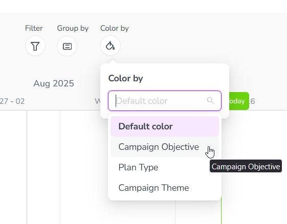

Color-code Timeline activity bars
In the Timeline display mode, marketing activities are represented by horizontal bars. To make it easier to identify activities at a glance, you can color-code the activity bars based on which option of a specified Drop-Down List attribute is set on each activity.
When an attribute has been set up for color-coding, it appears as an option in the  Select Color-Coding menu in the toolbar on the Timeline.
Select Color-Coding menu in the toolbar on the Timeline.
After you select an attribute from the  Select Color-Coding menu, each activity bar is displayed in a predetermined color based on the attribute option set on that activity.
Select Color-Coding menu, each activity bar is displayed in a predetermined color based on the attribute option set on that activity.
- Example
In this example, the Campaign Objective attribute has color-coding enabled, with the following colors assigned to each attribute value:
Sales Enablement: Green
Reputation: Blue
Demand Creation: Yellow
After you select the attribute Campaign Objective in the
 Select Color-Coding menu, the activity bars for activities with this attribute are displayed in the specified colors according to the attribute value that's assigned to them:
Select Color-Coding menu, the activity bars for activities with this attribute are displayed in the specified colors according to the attribute value that's assigned to them:The activity bar for the activity " Glow: Part of Your World " is displayed in green, because its Campaign Objective attribute is set to Sales Enablement.
The activity bar for the activity " Grow and Glow " is displayed in blue, because its Campaign Objective attribute is set to Reputation.
The activity bar for the activity " Up 'n Glow " is displayed in yellow, because its Campaign Objective attribute is set to Demand Creation.
The activity bar for the parent activity " 2025 Media Plan " is displayed in grey, because it either does not have the Campaign Objective attribute, or does not have a value for that attribute.

Color-code activity bars by attribute
In the
 Activities section, make sure the Timeline display mode is selected.
Activities section, make sure the Timeline display mode is selected.In the table controls, click
Select Color-Coding. The Color by menu panel opens.Use the Color by menu to select the attribute you want to use to color-code the activity bars:

{kind=link}
The activity bars in the Timeline change color based on the attribute option set on them for the selected attribute: 
To remove the attribute-based color-coding again, select the Default color option from the Color by menu.